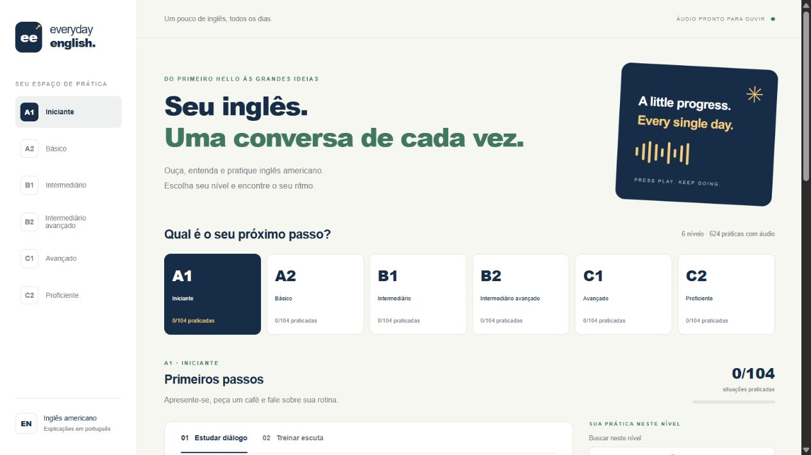
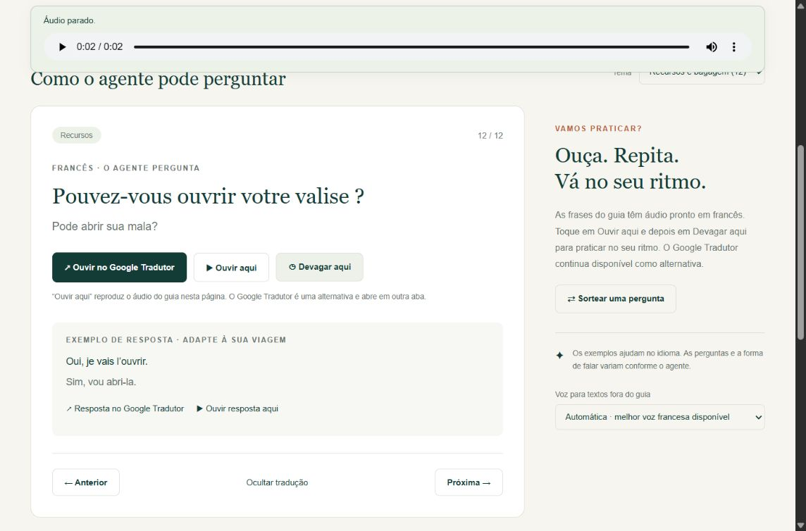

Everyday English
Inglês americano do A1 ao C2: 624 práticas com diálogos, áudio e vocabulário. Uma forma de estudar escuta e compreensão no próprio ritmo.
Sou Emanuel Andrade, estudante de Engenharia de Software em Fortaleza. Meu portfólio conecta o aprendizado em software a projetos úteis para o dia a dia.
Aplicações que fazem parte da minha trajetória. Explore os sites e consulte os repositórios.

Inglês americano do A1 ao C2: 624 práticas com diálogos, áudio e vocabulário. Uma forma de estudar escuta e compreensão no próprio ritmo.

Apoio em português para a chegada à França. São 55 perguntas em quatro temas, com tradução, exemplos de resposta e áudio normal ou lento.
Sistema para lançamento de despesas e solicitações de reembolso dos colaboradores.
Explorar repositório ↗Importação e conferência de despesas, com geração de arquivos TXT/CSV para o Fortes.
Explorar repositório ↗Sou estudante de Engenharia de Software, com interesse em desenvolvimento web e na criação de soluções úteis para o dia a dia. Meu portfólio reúne projetos de educação, comunicação e organização de processos, com HTML, CSS e JavaScript. Busco aprimorar meus conhecimentos por meio da prática e do aprendizado contínuo.
Entre os temas presentes estão educação, comunicação e organização de processos. Nos projetos web, utilizo HTML, CSS e JavaScript, com publicação pelo GitHub Pages.
Localização: Fortaleza, Ceará, Brasil.
Para falar sobre meus projetos ou trocar experiências.
emanuelbrasil1999@gmail.com